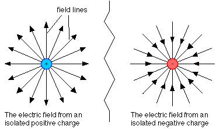

E = E1 + E 2 + E 3 + .....
In performing this sum the direction of each E
is
the
same as the force felt by a positive charge.

The direction of the electric field line is the same as that of
the force
felt by a positive charge. The density of the field lines
provides a
measure of the magnitude of the field. FIeld lines alway begin on
positive
charges and end on negative charges; they cannot be left 'hanging' in
empty
space.
The diagrams above display the electric field lines in the vicinity of two equal point charges.
Dr. C. L. Davis
Physics Department
University of Louisville
email: c.l.davis@louisville.edu